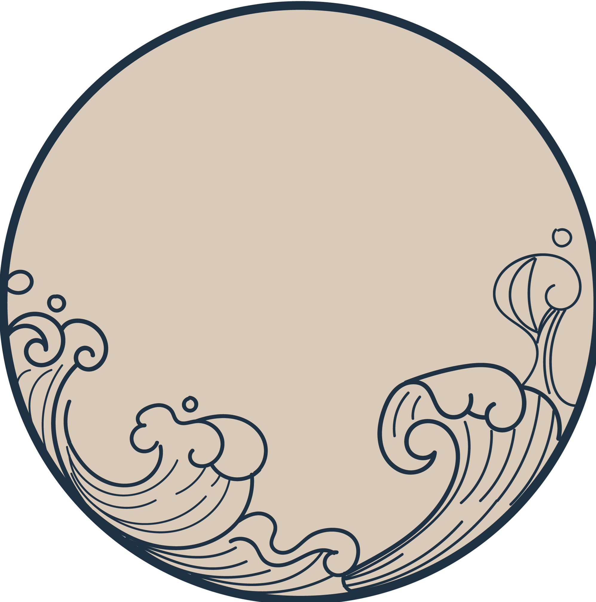
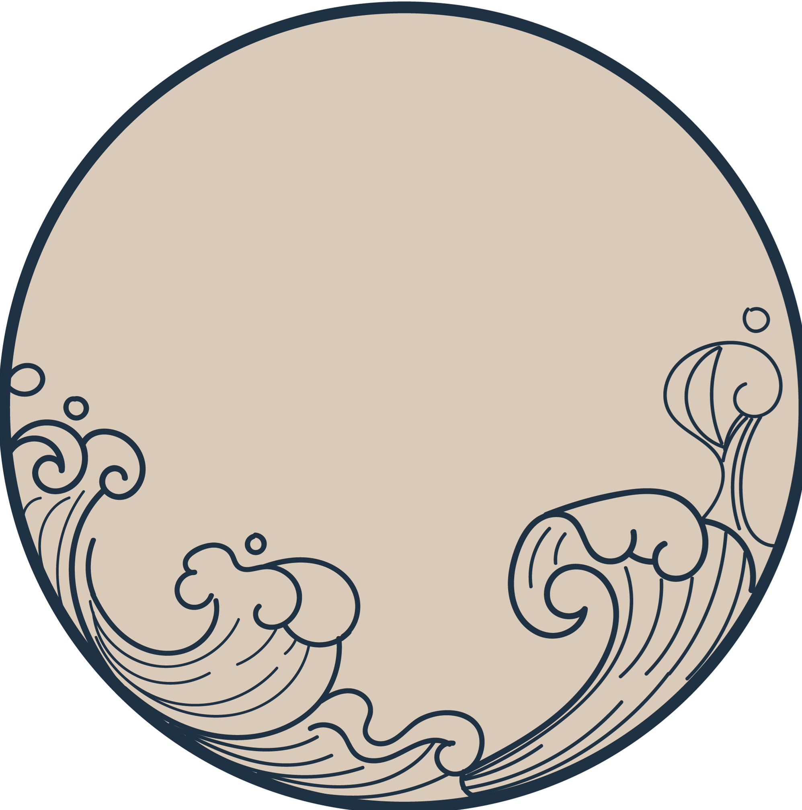

山西，简称“晋”，中华人民共和国省级行政区，省会太原，位于中国华北，东与河北为邻，西与陕西相望，南与河南接壤，北与内蒙古毗连。
山西，简称“晋”，中华人民共和国省级行政区，省会太原，位于中国华北，东与河北为邻，西与陕西相望，南与河南接壤，北与内蒙古毗连。山西省地势呈东北斜向西南的平行四边形，是典型的为黄土覆盖的山地高原，地势东北高西南低。高原内部起伏不平，河谷纵横，地貌有山地、丘陵、台地、平原。
山西省自古就有人类活动的迹象，并为中华文明的发源地之一。
大禹去世后，其子启继位。夏朝早期的统治中心在今山西晋南夏县一带，今夏县东下冯遗址是重要的夏墟。商朝时，山西南部在其“邦畿千里”之内，其余地方则散布着十几个方国部落。西周初期大规模分封诸侯，山西中南部为十余个诸侯的领地，其中主要诸侯国是晋国。
进入半殖民地半封建社会以后，山西的经济、文化发展受到严重破坏。
山西作为革命老区，在民国十年在太原组建社会主义青年团，开展革命活动。红军东征在晋西、晋中、晋南各地遍撒革命火种。
进入半殖民地半封建社会以后，山西的经济、文化发展受到严重破坏。
山西作为革命老区，在民国十年在太原组建社会主义青年团，开展革命活动。红军东征在晋西、晋中、晋南各地遍撒革命火种。
 《登鹳雀楼》
《登鹳雀楼》迥临飞鸟上，
高出世尘间。
天势围平野，
河流入断山。
《游石壁》
绝壁秋容胜， 荒坛冷气清。
野僧留客饮， 山鸟罥人鸣。
已极登临兴， 无穷今古情。
浩歌一樽酒， 四海共升平。  《太原早秋》
岁落众芳歇，时当大火流。
霜威出塞早，云色渡河秋。
梦绕边城月，心飞故国楼。
苦难压不弯他的脊梁，他与他的人民，
默默立于太行山黧黑的山脉下，
立于天地之间。
静默无言。
他的历史，
由万千无名之辈构成，
晋商车上的铜铃，
挖出黑金时滴落的汗水，
经过夏晒冬捞的
第一滴老陈醋散发出的醇香。
无数的无名之辈构造了他，
他们在这片土地上永世劳作，
籍籍无名又如何，
他们自有天地间笔直的脊梁，
绝壁秋容胜， 荒坛冷气清。
野僧留客饮， 山鸟罥人鸣。
已极登临兴， 无穷今古情。
浩歌一樽酒， 四海共升平。  《太原早秋》
岁落众芳歇，时当大火流。
霜威出塞早，云色渡河秋。
梦绕边城月，心飞故国楼。
苦难压不弯他的脊梁，他与他的人民，
默默立于太行山黧黑的山脉下，
立于天地之间。
静默无言。
他的历史，
由万千无名之辈构成，
晋商车上的铜铃，
挖出黑金时滴落的汗水，
经过夏晒冬捞的
第一滴老陈醋散发出的醇香。
无数的无名之辈构造了他，
他们在这片土地上永世劳作，
籍籍无名又如何，
他们自有天地间笔直的脊梁，